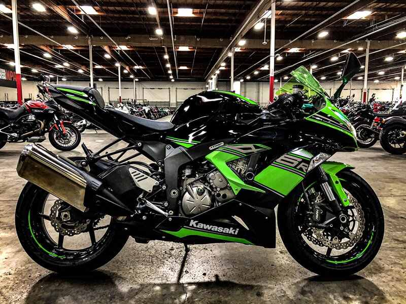

Технические характеристики - KAWASAKI NINJA 636 ZX-6R
Мощность л.с. - 124: 50% - 130: 50%
Максимальная скорость км/час 280: 50% 300: 50%
Объем бензобака, литров 21
Расход топлива на 100км. Трасса: 5 Город: 6
Сухая масса, кг 164
Система запуска: Стартер
Топливная система питания Инжектор
Тип(вид) мотора 4рядн.
Наличие центральной подножки Есть
Тип привода колеса Цепь Коробка передач: мех.6-х ступч.
Тормоза передние 2х дисковые
Тормоза задние Диск
Тип передней ходовой: Перевертыш
Тип задней ходовой Моно маятник
Задний амортизатор 1 амортизатор
Приборная панель Цифровая